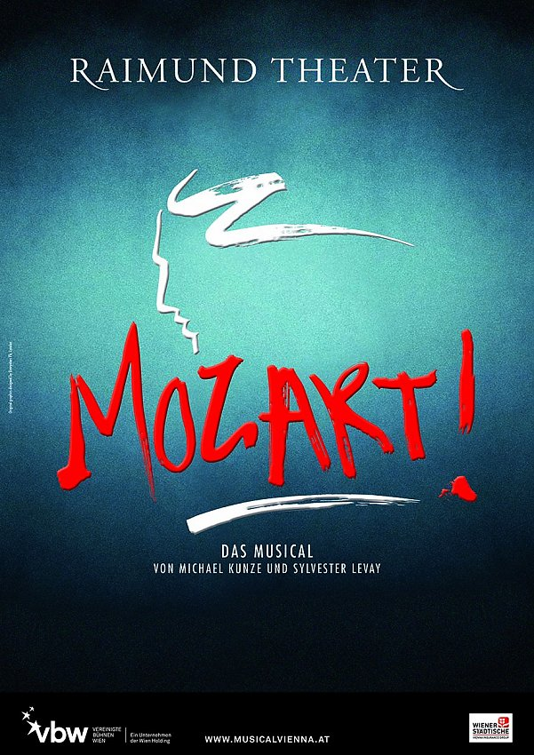

莫扎特
内容简介：
- 《莫扎特》是一部德奥音乐剧，由Michael Kunze作词，Sylvester Levay作曲，是一部描述Wolfgang Amadeus Mozart的德语音乐剧。全剧共有53首歌曲，分为两幕进行演出，其中包含了流行、摇滚和古典等各种风格的歌曲。 这部音乐剧概述了Wolfgang Amadeus Mozart的痛苦而又短暂的一生，突出了他对艺术的极致追求和对自由的无限渴求，也描绘出由此在他生活中与父亲和Colloredoqin亲王产生的冲突。这部音乐剧最特别的设定是，在舞台上让Mozart和一个孩子Amadè同时出现, 他就是小时候的Mozart, 永无停止地在写新的交响乐，最后也是他终结了Mozart的生命。